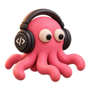

octopus por dentro
Una guía para aprender Rust leyendo un proyecto real: qué hace cada archivo, por qué se decidió cada cosa y qué falta para publicarlo bien.
Los términos con subrayado punteado se explican al tocarlos: qué son y por qué se usan acá. Segunda parte: CI/CD, cómo y por qué.
Cómo se hizo, con honestidad. Este proyecto lo escribió Claude (Claude Code, modelo Claude Sonnet 5.5) en una conversación con una persona que desarrolla software y nunca había usado Rust. Esa persona definió qué quería y probó el resultado en su máquina; el código y esta guía los redactó la IA.
Por eso conviene leerlo con ojo crítico: no lo revisó ningún experto en Rust, solo se probó en macOS y las decisiones de la sección 4 son razonables pero discutibles. Si encontrás un error, un issue o un PR son muy bienvenidos.
1. Qué es octopus
Es una app de bandeja del sistema que pega textos predefinidos (emails, números de prueba, lo que sea) con una combinación de teclas, en cualquier aplicación. Reemplaza el uso que se le daba a Karabiner-Elements, pero sin instalar ningún driver de teclado.
Se configura en una ventana con una tabla: atajo, texto, descripción. Los atajos se agrupan en plantillas (pestañas) y una sola está activa a la vez. Puede arrancar con el sistema.
Está construido con , que además se encarga del : convertir el código en una app que se puede instalar en cada sistema.
Son unas 350 líneas de Rust, unas 400 de HTML/CSS/JS y nada más. Esa escala es lo que lo hace bueno para aprender: se lee entero en una tarde.
2. Mapa del repo
| Ruta | Qué es | Por qué está así |
|---|---|---|
src/main.rs | Toda la lógica: hotkeys, pegado, config, bandeja, comandos para la UI. | Con unas 350 líneas, partirlo en módulos sería ruido. Cuando crezca, el primer corte natural es config.rs (structs y migración) y paste.rs. |
ui/index.html | La ventana de configuración: HTML, CSS y JS en un solo archivo. | Sin bundler ni framework: no hay node_modules, el build es solo cargo. Tauri empaqueta la carpeta ui/ dentro del binario. |
ui/octopus.png | El pulpo que se ve en la ventana. | Tiene que estar dentro de ui/ para que el HTML lo pueda cargar con una ruta relativa. |
| Nombre, versión, edición de Rust y dependencias. | Declara qué se usa y con qué features (por ejemplo tray-icon para el ícono de bandeja). | |
Cargo.lock | Las versiones exactas que se resolvieron. | Se versiona en apps (no en librerías) para que cualquiera compile exactamente lo mismo. |
build.rs | Script que corre antes de compilar. | Tauri lo necesita para generar el contexto de la app y validar permisos. |
tauri.conf.json | Nombre del producto, identificador (dev.octopus.app), ventana, íconos y formatos de empaquetado. | El identificador también define dónde se guarda la config del usuario y con qué nombre macOS recuerda los permisos. |
capabilities/default.json | Qué APIs de Tauri puede usar la ventana. | Tauri 2 es "deny by default": la ventana solo tiene core:default. Nuestros comandos propios no necesitan permisos extra. |
icons/ | Íconos para cada sistema (.icns macOS, .ico Windows, PNG Linux) y el de la bandeja. | Se generan con tauri icon desde assets/octopus.png. Se versionan porque el build los necesita. |
assets/octopus.png | La imagen original (1254×1254) de la que salen todos los íconos. | Fuente única de verdad: si cambia el pulpo, se regenera todo. |
scripts/sign.sh | Firma la app en macOS con un requisito estable. | Sin esto, macOS pierde el permiso de Accesibilidad cada vez que recompilás. Es solo para macOS. |
.gitignore | Ignora target/, gen/ y .impeccable/. | Son resultados de compilar o cachés de herramientas, no código. |
target/, gen/ | Lo que produce compilar: binarios y archivos generados por Tauri. | Cada build los vuelve a crear, así que no se suben al repo. |
3. Qué pasa al apretar una tecla
Este es el camino completo de un atajo. Leerlo junto a src/main.rs da el mapa mental del programa.
- Al arrancar,
setuplee el JSON y llama aapply, que le pide al sistema operativo registrar cada combinación de la plantilla activa como . - Apretás ⌃⌥E. El sistema operativo (no octopus) detecta la combinación registrada y avisa a la app. No hay ningún driver mirando el teclado.
- El handler del plugin recibe el
Shortcut. Si es la combinación de abrir, muestra la ventana. Si no, busca en elStateel texto asociado. - Si hay texto,
pastelanza un para no bloquear el bucle de eventos de la app. - El hilo espera 350 ms (a que sueltes las teclas), guarda lo que tenías en el portapapeles (texto, imagen, archivos o HTML) y copia el texto nuevo.
- Con
enigosimula Cmd+V (Ctrl+V fuera de Mac). Esto es lo único que necesita el . - Espera 250 ms y restaura el portapapeles original, con el mismo tipo de contenido que tenía. Si era algo que no sabe copiar, lo deja vacío en vez de dejar el texto pegado.
Si falta el permiso de Accesibilidad, Enigo::new devuelve error y el hilo termina antes de restaurar el portapapeles. Es un buen accidente: el texto queda copiado y podés pegarlo a mano.
4. Decisiones importantes y por qué
| Decisión | Alternativas | Por qué esta |
|---|---|---|
| Rust + 2 | Electron, Go, Python, Swift | Binario chico (~12 MB) sin runtime, multiplataforma, y la ventana usa el del sistema en vez de traerse un Chromium. Swift sería nativo pero solo Mac. |
| Hotkeys del sistema operativo | Interceptar el teclado (Karabiner, CGEventTap) | Interceptar requiere o permisos de "Input Monitoring". Registrar un hotkey global solo requiere pedirle al sistema que avise. Es justo lo que tu máquina restringida sí permite. |
| Pegar vía portapapeles | Tipear carácter por carácter | Es instantáneo y no depende del layout del teclado (un @ en teclado latam no es el mismo de uno en inglés). El costo: hay que restaurar el portapapeles. |
| Guardar y restaurar el portapapeles completo | Guardar solo el texto | La primera versión solo guardaba texto plano. Si habías copiado una imagen, un archivo o contenido sin texto, no se podía restaurar y te quedaba el último atajo en el portapapeles. Se detectó usándolo, se reprodujo aparte con cada tipo de contenido y se corrigió. Ahora se guarda texto, HTML, imagen o archivos. |
| Hilo para pegar | Pegar dentro del handler | El handler corre en el hilo principal. Un sleep ahí congelaría la app. |
State(Mutex<Vec<…>>) | Variable global, o releer el JSON en cada tecla | El handler es una closure registrada una sola vez y no recibe argumentos nuestros. manage + state es la forma de Tauri de compartir datos, y el Mutex permite escribir desde apply y leer desde el handler. |
Config en JSON en app_config_dir | TOML, SQLite, junto al ejecutable | La UI lo consume directo con serde_json. El directorio lo resuelve Tauri por sistema operativo, así que no hay rutas hardcodeadas. |
parse_config acepta dos formatos | Romper la config vieja | La v1 guardaba una lista plana; la v2 guarda plantillas. Intentar el formato nuevo y caer al viejo evita que el usuario pierda sus atajos. |
Config::fixed() | Validar en cada uso | Garantiza una invariante (al menos una plantilla, active dentro del rango) en un solo lugar. Después se puede indexar profiles[active] sin miedo. |
| Una sola plantilla activa | Todas registradas a la vez | Permite repetir el mismo atajo en plantillas distintas (trabajo, QA) sin conflicto. |
| Combinación de apertura por sistema | Una sola para todos | En Windows/Linux Ctrl+Alt es y rompe caracteres como @ en teclados latam y españoles. Ahí lleva Shift. Se resuelve en compilación con . |
| Cerrar la ventana = esconderla | Cerrar la app | octopus vive en la bandeja. prevent_close() y hide(). Salir es una acción explícita del menú. |
| Frontend sin framework | React, Svelte, Vue | Una tabla editable y unas pestañas no justifican un toolchain. withGlobalTauri expone invoke sin bundler. |
Los comandos devuelven Result<_, String> | Tipos de error propios | El error viaja a JavaScript serializado: un String es lo más simple. Con más comandos conviene un enum con thiserror. |
apply registra lo que puede y reporta el resto | Abortar al primer error | Un atajo repetido o tomado por otra app no debería dejar sin funcionar a los demás. Los errores vuelven por combinación y la UI los marca en la fila. |
| con identificador estable | Firma ad-hoc por defecto, certificado | La firma por defecto ata el permiso al hash del binario, que cambia en cada compilación. Con un requisito basado en el identificador el permiso se conserva. Para distribuir hace falta un certificado Developer ID. |
5. Rust en el código real
Cada concepto de abajo aparece en src/main.rs. Los fragmentos están simplificados (sin el formato exacto de rustfmt).
Tipos de datos y derive
src/main.rs
#[derive(Clone, Serialize, Deserialize)]
struct Entry {
combo: String,
text: String,
desc: String,
}Un struct agrupa campos con nombre. #[derive(...)] le pide al compilador que escriba el código repetitivo por vos: Clone permite duplicarlo, y Serialize/Deserialize (de ) lo convierten desde y hacia JSON sin una sola línea manual. Los mismos structs sirven para el archivo y para hablar con la UI.
Propiedad (ownership) y préstamos
src/main.rsfn apply(app: &AppHandle, cfg: &Config) -> Result<(), String> { … }
fn paste(text: String) {
thread::spawn(move || {
// `text` se mudó adentro del hilo
});
}Es la idea central de Rust. &Config es un : apply puede leer la config pero no se la queda, así que quien llama la sigue usando. En cambio text: String se pasa por valor, o sea que paste pasa a ser su dueña. El hilo necesita vivir más que la función, así que la closure es move: se lleva text adentro. El compilador comprueba que nadie más lo use, y eso evita toda una clase de bugs de memoria y de hilos.
Option, Result y manejo de errores
src/main.rs
let Ok(mut cb) = Clipboard::new() else {
return eprintln!("paste: clipboard open failed");
};
fs::write(config_path(&app), json).map_err(|e| e.to_string())?;
fs::read_to_string(path).map(|s| parse_config(&s)).unwrap_or_default()Rust no tiene excepciones ni null. Algo que puede faltar es un Option (Some/None); algo que puede fallar es un Result (Ok/Err). Tres herramientas aparecen acá:
let … else: si el patrón no calza, ejecutás elelsey salís. Evita anidarif.?: si hay error, lo devuelve de inmediato desde la función; si no, desenvuelve el valor.map_errconvierte el tipo de error (acá aString) yunwrap_or_defaultda un valor por defecto si falló la lectura.
Pattern matching con guardas
src/main.rs, dentro deapply
match e.combo.parse::<Shortcut>() {
Ok(s) if s == open => errs.push("reservada para abrir la configuración"),
Ok(s) if ya_registrada(&s) => errs.push("repetida"),
Ok(s) => match gs.register(s) {
Ok(_) => ok.push((s, e.text.clone())),
Err(err) => errs.push(format!("{}: {}", e.combo, err)),
},
Err(_) => errs.push("combinación inválida"),
}match obliga a cubrir todos los casos: si olvidás uno, no compila. Las guardas (if …) permiten distinguir casos dentro de un mismo patrón. El orden importa, se evalúa de arriba hacia abajo. Fijate que parse::<Shortcut>() funciona porque Shortcut implementa el trait FromStr.
Enums con datos: modelar "una de varias cosas"
src/main.rsenum Saved {
Files(Vec<PathBuf>),
Image(ImageData<'static>),
Html(String, Option<String>),
Text(String),
Other,
}
let r = match saved {
Saved::Files(f) => cb.set().file_list(&f),
Saved::Image(i) => cb.set().image(i),
Saved::Html(h, alt) => cb.set().html(h, alt),
Saved::Text(t) => cb.set_text(t),
Saved::Other => cb.clear(),
};Un enum de Rust es una de varias variantes, y cada una puede llevar sus propios datos. Acá el portapapeles puede tener archivos, una imagen, HTML o texto, y cada caso necesita guardar algo distinto. Como match obliga a cubrir todas las variantes, si más adelante se agrega una nueva el compilador marca todos los lugares donde falta manejarla.
Este código nació de un bug real: la primera versión guardaba el portapapeles como Option<String>, es decir "texto o nada", y eso no podía representar una imagen. Cuando el tipo no alcanza para describir la realidad, el código termina con huecos. Reemplazarlo por un enum corrigió el problema de raíz.
Traits: Default y traits de extensión
src/main.rs
impl Default for Config {
fn default() -> Self { /* una plantilla vacía */ }
}
use tauri_plugin_global_shortcut::GlobalShortcutExt;
let gs = app.global_shortcut(); // método "agregado" a AppHandleUn trait es un conjunto de métodos que un tipo se compromete a tener (como una interfaz). Implementar Default habilita unwrap_or_default() y #[derive(Default)] en otros tipos. Los traits de extensión (GlobalShortcutExt, ManagerExt) son la forma en que un plugin le "agrega" métodos a un tipo que no es suyo: solo funcionan si importás el trait con use.
Compilación condicional
src/main.rs#[cfg(target_os = "macos")]
const OPEN_COMBO: &str = "Ctrl+Alt+O";
#[cfg(not(target_os = "macos"))]
const OPEN_COMBO: &str = "Ctrl+Shift+Alt+O";El código de la rama que no corresponde ni se compila. Así el mismo archivo sirve para los tres sistemas y no queda lógica de "¿en qué OS estoy?" en tiempo de ejecución. &'static str es un texto que vive durante todo el programa.
Estado compartido y concurrencia
src/main.rs#[derive(Default)]
struct State(Mutex<Vec<(Shortcut, String)>>);
// escribir (apply)
*app.state::<State>().0.lock().unwrap() = ok;
// leer (handler del hotkey)
let text = app.state::<State>().0.lock().unwrap()
.iter().find(|(s, _)| s == sc).map(|(_, t)| t.clone());Dos hilos pueden tocar la lista de atajos (el de la UI y el del hotkey). garantiza que uno a la vez: lock() devuelve una "llave" que se suelta sola al salir del alcance. struct State(...) es un tuple struct y se accede al campo con .0. El unwrap() acá solo falla si otro hilo entró en pánico con la llave tomada (poisoning).
Closures y el patrón builder
src/main.rsTrayIconBuilder::new()
.icon(…)
.menu(&menu)
.on_menu_event(|app, ev| match ev.id.as_ref() {
"open" => show_window(app),
"quit" => app.exit(0),
_ => {}
})
.build(app)?;Cada método devuelve el builder, así que se encadenan. Las closures (|args| cuerpo) son funciones anónimas que se pasan como callbacks. El _ => {} es el caso "cualquier otro", obligatorio en un match sobre texto.
Atributos #[tauri::command] y el puente con JS
src/main.rs y ui/index.html
#[tauri::command]
fn save_config(app: AppHandle, config: Config) -> Result<(), String> { … }
// en el HTML
await invoke('save_config', { config: cfg });La macro genera el código que convierte el JSON que manda JavaScript en un Config de Rust (por eso lleva Deserialize) y el Result de vuelta en una promesa resuelta o rechazada. Los argumentos en camelCase del lado JS se asocian a los nombres del lado Rust.
clippy y rustfmt: dos revisores automáticos
Rust trae dos herramientas oficiales que revisan el código sin ejecutarlo:
cargo fmt(rustfmt) se ocupa del formato: espacios, saltos de línea, orden. No opina sobre si el código está bien, solo lo deja con un estilo único.cargo clippyes un linter: detecta código que compila pero es sospechoso, poco idiomático o mejorable. El nombre viene del asistente de Office.
Un ejemplo real. Este código compila sin quejas:
ejemplo, no es parte de octopuslet v: Vec<i32> = vec![1, 2, 3];
if v.len() == 0 { println!("vacío"); }
let listo = true;
if listo == true { println!("listo"); }
for i in 0..v.len() { println!("{}", v[i]); }Pero cargo clippy marca tres cosas. Esta es la salida real de la versión 0.1.98, recortada:
warning: length comparison to zero
--> src/main.rs:3:8
| if v.len() == 0 {
| ^^^^^^^^^^^^ help: using `is_empty` is clearer and more explicit: `v.is_empty()`
warning: equality checks against true are unnecessary
--> src/main.rs:7:8
| if listo == true {
| ^^^^^^^^^^^^^ help: try: `listo`
warning: the loop variable `i` is only used to index `v`
--> src/main.rs:10:14
| for i in 0..v.len() {
| ^^^^^^^^^^
= help: consider using an iterator: for <item> in &vCada aviso trae un nombre (clippy::len_zero, clippy::bool_comparison, clippy::needless_range_loop), un enlace a su explicación y, muchas veces, la corrección. Por eso es una buena forma de aprender: cada aviso enseña la forma que Rust considera natural. Algunas cosas se arreglan solas con cargo clippy --fix.
- Niveles: los lints se agrupan en categorías. Los de correctness (errores casi seguros) frenan la compilación; los de style, complexity y perf son avisos; otros más estrictos (como pedantic) vienen apagados.
- Silenciar uno: si un aviso no aplica en un caso concreto, se anota
#[allow(clippy::nombre)]en ese lugar, con un comentario que explique por qué. - En octopus: corrimos
cargo clippy --all-targets -- -D warningsy no marcó nada. Ojo: se corrió solo en macOS. En Windows y Linux, el código que solo se usa en Mac (por#[cfg]) puede quedar sin uso y generar avisos. El CI nos lo va a decir. - En el CI: se corre con
-D warnings, que convierte cualquier aviso en error. Está explicado en la segunda parte.
Tests
src/main.rs#[cfg(test)]
mod tests {
use super::*;
#[test]
fn config_migrates_legacy_and_clamps() {
let legacy = r#"[{"combo":"Ctrl+Alt+E","text":"a","desc":"d"}]"#;
let c = parse_config(legacy);
assert_eq!(c.profiles[0].entries.len(), 1);
assert_eq!(parse_config("basura").profiles.len(), 1);
}
}El módulo tests solo existe con cargo test. use super::* importa todo lo del archivo, incluidas las funciones privadas. Los tests actuales cubren las dos cosas con lógica propia: que las combinaciones que genera la UI se puedan parsear, y que la migración de config funcione.
Cargo: edition, features y build.rs
Cargo.toml
edition = "2024"
tauri = { version = "2.12.7", features = ["tray-icon"] }La edition fija el dialecto del lenguaje. Los features activan partes opcionales de una dependencia: el ícono de bandeja no viene por defecto para no compilar de más. serde usa derive como feature para habilitar las macros.
6. Buenas prácticas: qué hay y qué falta
Una guía honesta: el proyecto sigue varias prácticas y deja otras pendientes a propósito, porque es un MVP.
| Práctica | Estado | Comentario |
|---|---|---|
| Formato con | Hecho | cargo fmt --check pasa. |
| Lints con | Hecho | cargo clippy --all-targets corre sin avisos. |
| Tests de la lógica propia | Hecho | 2 tests. No hay tests de integración ni de la UI. |
| Casos borde de datos del usuario | Hecho, con un límite | El portapapeles se probó aparte con texto, imagen, HTML, archivos y vacío. No hay un test automático, porque correrlo pisaría tu portapapeles real. El contenido propio de algunas apps no se puede restaurar. |
Errores sin panic en el flujo normal | Hecho | Los fallos de pegado y de registro se reportan. Quedan unwrap() sobre constantes (cubiertas por un test) y lock().unwrap(). |
| Una invariante, un solo lugar | Hecho | Config::fixed(). |
| Permisos mínimos | Hecho | La ventana solo tiene core:default. No hay red, ni acceso a archivos desde JS. |
| Registro de eventos (logging) | Pendiente | Hoy hay eprintln!. Mejor el crate log con un nivel configurable. |
| Política de seguridad de contenido (CSP) | Pendiente | tauri.conf.json tiene "csp": null. Como la UI es local y no carga nada externo el riesgo es bajo, pero conviene definir una CSP estricta. |
Tiempos fijos con sleep | Pendiente | 350 ms y 250 ms son estimaciones. Más robusto: consultar si los modificadores siguen apretados y recién ahí pegar. |
| Errores tipados | Pendiente | Reemplazar String por un enum con thiserror si los comandos crecen. |
| Config en texto plano | Aceptable hoy | Son datos de prueba. Si se guardara algo sensible hay que cifrarlo o usar el llavero del sistema. |
Hecho para ci.yml | ci.yml corrió el 20 de noviembre de 2026 y pasó en macOS, Windows y Linux (formato, clippy y tests). release.yml todavía no corrió: nunca se generó un instalador. Ver la sección 8. | |
| Probado en Windows y Linux | Parcial | El CI compila el código, pasa clippy y corre los tests en los dos sistemas. Pero la app no se abrió ni se usó en ninguno: no sabemos si los atajos, el pegado y la bandeja funcionan. |
7. ¿Corre en Windows y Linux?
Compila en los tres sistemas; funcionar es otra cosa. El CI de GitHub ya compiló octopus en macOS, Windows y Linux, pasó clippy y corrió los tests. Lo que nadie probó es la app abierta en Windows y Linux: los atajos, el pegado y la bandeja.
Todas las piezas (Tauri, el plugin de hotkeys, arboard, enigo y el plugin de autoarranque) tienen soporte para los tres sistemas, y el código ya separa lo específico de macOS con #[cfg]. Pero solo se ejecutó en Mac. Tomalo como una hipótesis razonable, no como una confirmación.
| macOS | Windows | Linux | |
|---|---|---|---|
| Hotkeys globales | Sí | Sí (la combinación con la tecla Win suele estar reservada por el sistema) | Solo X11. En , según la documentación del crate, no funcionan |
| Pegado simulado | Sí, con permiso de Accesibilidad | Sí (Ctrl+V) | X11 sí. Wayland: soporte experimental en enigo, sin garantías |
| Ícono de bandeja | Sí | Sí | Necesita libayatana-appindicator; en GNOME hace falta una extensión. Los clicks al ícono no llegan, por eso el menú tiene "Configuración" |
| Arranque con el sistema | Registro de Windows | Archivo .desktop en autostart | |
| Combinación de apertura | ⌃⌥O | Ctrl+Shift+Alt+O | Ctrl+Shift+Alt+O |
| Instalador | .app / .dmg | .msi / .exe (NSIS) | .deb, .rpm, .AppImage |
| Firma para distribuir | Developer ID + | Certificado de firma de código; sin firmar aparece SmartScreen | No obligatoria |
Cómo se haría
- Se compila en cada sistema: Tauri no hace compilación cruzada de forma práctica. Para Windows hay que estar en Windows (con las herramientas de compilación de Visual Studio) y para Linux en Linux. La solución normal es la integración continua (sección 8).
- Dependencias de Linux (Debian/Ubuntu):
sudo apt install build-essential libwebkit2gtk-4.1-dev libxdo-dev \ libssl-dev libayatana-appindicator3-dev librsvg2-dev - Windows necesita WebView2, que ya viene en Windows 11 y se instala solo con el instalador en Windows 10.
- Formatos de empaquetado:
tauri.conf.jsontiene"targets": "all", y cada sistema genera los suyos:.appy.dmgen macOS,.msiy.exeen Windows,.deb,.rpmy.AppImageen Linux. - Lo que es solo de macOS y hay que dejar afuera en los otros:
scripts/sign.shy la política de activación (ya está detrás de#[cfg]). - Pendiente en la UI: los símbolos ⌃⌥⇧ ya cambian por nombres fuera de Mac, pero habría que revisar el aspecto en Windows y Linux.
El riesgo más grande es Wayland. Muchas distribuciones de Linux ya arrancan con Wayland por defecto, y ahí un hotkey global entre apps no es posible con este enfoque. Hay que documentarlo en el README en vez de prometer soporte en Linux.
8. Publicar en GitHub con buenas prácticas
Antes de subir nada
- Revisá la política de tu empleador. El proyecto se hizo en una máquina de trabajo. Verificá tu contrato sobre propiedad intelectual y proyectos personales, y publicalo desde tu cuenta personal, no la corporativa.
- Secretos y datos personales: la config real vive fuera del repo (en la carpeta de configuración del sistema), así que no hay nada para filtrar. Igual, antes del primer commit, revisá con
git statusygit diff --cachedque no entre ningún texto personal de ejemplo. - Licencia:
GPL-3.0-or-later, una licencia de . Se eligió para que octopus y todas sus versiones derivadas sigan siendo libres: quien lo modifique y lo distribuya tiene que hacerlo con el código abierto y bajo la misma licencia. Usarlo no obliga a nada, tampoco dentro de una empresa; las obligaciones aparecen al distribuir. El texto completo está enLICENSEy cada archivo de código lleva la etiquetaSPDX-License-Identifier. Las dependencias son compatibles: de las 267 que entran en una compilación para macOS, casi todas son MIT, Apache-2.0, BSD, Zlib o Unicode, y cinco son MPL-2.0, que también se puede combinar con GPL-3.0. Las que solo se usan en Windows y Linux no se verificaron. Se eligió la versión 3 y no la 2 porque Apache-2.0, que usan muchas dependencias, solo es compatible con la 3. Conviene volver a revisar las licencias concargo denyocargo about. - El pulpo: la GPL cubre el código. La imagen que se usa de mascota y de ícono es un recurso aparte: la escultura original es de plastilina y se le agregaron detalles con IA. Va bajo CC BY-SA 4.0, el equivalente de la GPL para imágenes (copyleft: se puede reutilizar dando crédito y compartiendo igual). Está en
assets/README.md.
Qué debería tener el repositorio
| Archivo | Para qué |
|---|---|
README.md | Qué hace, una captura o GIF, cómo instalarlo, permisos que pide y por qué, limitaciones conocidas (Wayland, AltGr), cómo compilarlo. |
LICENSE | El texto completo de la GPL-3.0. Ya está en el repo. |
CHANGELOG.md | Cambios por versión (formato Keep a Changelog). |
SECURITY.md | Cómo reportar una vulnerabilidad. Relevante porque la app simula teclado y toca el portapapeles. |
CONTRIBUTING.md | Cómo correr los tests y qué se espera de un PR. |
.github/workflows/ci.yml | Verificaciones automáticas en cada push y PR. |
.github/workflows/release.yml | Generar los instaladores al crear una etiqueta de versión. |
.github/dependabot.yml | PRs automáticos para actualizar dependencias de Cargo y de las Actions. |
.github/ISSUE_TEMPLATE/ | Plantilla que pida sistema operativo, versión y pasos para reproducir. |
Git
- El repo todavía no tiene commits, así que es el momento ideal de ordenar. Renombrá la rama:
git branch -M main. - Commits chicos y con mensajes claros (por ejemplo Conventional Commits:
feat:,fix:,docs:). Cargo.lockse sube (es una app).target/ygen/no.- con etiquetas
v0.1.0. La versión está en dos lugares,Cargo.tomlytauri.conf.json, y hay que mantenerlas iguales.
Integración continua y releases: ya están en el repo
Son dos archivos en .github/workflows/. ci.yml ya corrió y pasó en los tres sistemas. release.yml todavía no corrió: la primera vez que se etiquete una versión es la prueba, y puede fallar algo del empaquetado.
| Archivo | Cuándo corre | Qué hace |
|---|---|---|
ci.yml | En cada push a main o master y en cada PR | Verifica el formato (cargo fmt --check) y después, en macOS, Windows y Linux, corre cargo clippy -D warnings y cargo test. Con fail-fast: false, un sistema roto no esconde el resultado de los otros. |
release.yml | Al subir una etiqueta v* | Primero comprueba que la etiqueta, Cargo.toml y tauri.conf.json tengan la misma versión. Después arma los instaladores para macOS (Apple Silicon e Intel), Windows y Linux con tauri-action y los sube a un release en borrador. |
Para sacar una versión: subí la versión en Cargo.toml y en tauri.conf.json, hacé commit y después git tag v0.1.0 && git push --tags. Cuando terminen los trabajos, revisá el borrador en GitHub y publicalo a mano.
Configuración del repositorio en GitHub
- Protegé
main: exigir que pase el CI y revisión antes de mergear. - Activá y las alertas de seguridad. Sumá
cargo auditocargo denyal CI. - Completá la descripción y los topics (
rust,tauri,text-expander).
Firma e instalación
Sin firma, los instaladores se pueden usar pero el sistema muestra advertencias: Gatekeeper en macOS (se resuelve con una cuenta de Apple Developer y notarización) y SmartScreen en Windows (se resuelve con un certificado de firma de código). Para un proyecto personal es razonable lanzar sin firmar y explicar en el README cómo abrirlo.
9. Comandos
# desarrollo
cargo run # arranca la app (ojo: los permisos van a tu terminal)
cargo test # corre los tests
cargo fmt && cargo clippy --all-targets # formato y lints
# empaquetar (macOS)
npx @tauri-apps/cli@2 build --bundles app # solo el .app (sin el .dmg); sale en target/release/bundle/macos/
./scripts/sign.sh # firma estable para conservar el permiso de Accesibilidad
# regenerar íconos desde la imagen original
npx @tauri-apps/cli@2 icon assets/octopus.png -o icons
# config del usuario (macOS)
~/Library/Application Support/dev.octopus.app/octopus.json10. Ejercicios para seguir aprendiendo
- Cambiar de plantilla desde la bandeja. Agregá al menú un ítem por plantilla. Practicás cerrar sobre datos, el estado compartido y reconstruir un menú.
- Reemplazar
eprintln!porlog. Sumá el crate, un nivel por entorno y un archivo de registro. - Quitar el
sleep(350). Consultá el estado de los modificadores y esperá a que se suelten. Es un buen ejercicio de FFI y de cómo medir en vez de adivinar. - Errores tipados. Reemplazá
Result<_, String>por unenumconthiserrory mapeá cada variante a un mensaje de la UI. - Exportar e importar plantillas. Un comando que lea y escriba un JSON elegido por el usuario. Practicás validación de entradas externas.
- Un test para el portapapeles. Extraé
save_clipboardyrestore_clipboarda un módulo que reciba el portapapeles como parámetro (un trait), para probarlos con uno falso sin tocar el del sistema. - Partir
main.rsen módulos (config,paste,tray) y ver cómo cambian la visibilidad (pub) y losuse. - Escribir el
ci.ymlde la sección 8, subirlo y ver qué rompe en Windows y Linux. Esa lista es el verdadero estado del soporte multiplataforma.
Glosario
Qué es. Un framework para armar apps de escritorio con el motor en Rust y la interfaz en HTML, CSS y JavaScript, mostrada en el webview del sistema. También genera los instaladores.
Por qué acá. El binario queda en unos 12 MB, sin traer un navegador entero como Electron, y el mismo proyecto apunta a macOS, Windows y Linux. Ya resuelve la bandeja, los hotkeys, el autoarranque y el empaquetado.
Qué es. El paso que convierte el código compilado en algo que una persona puede instalar y abrir: un .app o .dmg en macOS, .msi o .exe en Windows, .deb o .AppImage en Linux. Le agrega el ícono, el nombre, el identificador (dev.octopus.app) y, si hay certificado, la firma.
Por qué acá. Un binario suelto no tiene ícono, ni puede pedir permisos con un nombre propio, ni arrancar con el sistema, ni repartirse. En macOS además es necesario: permisos como Accesibilidad se asocian a la app empaquetada. Cada sistema usa formatos distintos y Tauri los genera desde una sola configuración. Es el equivalente a "armar el release" en otros mundos, como compilar y publicar un sitio web o construir una imagen de Docker.
Qué es. Una combinación de teclas que el sistema operativo vigila durante toda la sesión, sin importar qué app tenga el foco. La app se registra y el sistema le avisa cuando se aprieta.
Por qué acá. Es la forma más liviana de reaccionar a una tecla: no lee el teclado ni necesita drivers. Si otra app ya registró la misma combinación, el registro falla y octopus lo marca en la fila de la tabla.
Qué es. Un permiso de macOS (Privacidad y seguridad, Accesibilidad) que deja a una app controlar a otras, por ejemplo mandándoles teclas.
Por qué acá. Hace falta solo para simular el Cmd+V del pegado. Sin él, octopus igual deja el texto en el portapapeles y lo pegás vos. El permiso queda atado a la app y a su firma, por eso firmamos con un identificador estable.
Qué es. Una línea de ejecución independiente dentro del programa. El hilo principal atiende la interfaz y los eventos, y otros hilos trabajan en paralelo.
Por qué acá. Pegar requiere esperar (350 ms antes y 250 ms después). Si esperáramos en el hilo principal, la app se congelaría. Por eso paste lanza su propio hilo.
Qué es. Un navegador embebido que trae el sistema (WebKit en macOS, WebView2 en Windows, WebKitGTK en Linux) y que dibuja la ventana usando HTML y CSS.
Por qué acá. Evita empaquetar un Chromium propio, que es lo que hace pesada a Electron. El costo es que puede haber pequeñas diferencias de aspecto entre sistemas.
Qué es. Software con privilegios del sistema que se engancha al hardware. Karabiner instala uno (DriverKit) para interceptar el teclado antes que cualquier app.
Por qué acá. Instalar drivers pide permisos de administrador y suele estar bloqueado en máquinas corporativas, justo tu caso. octopus no necesita ninguno porque usa hotkeys del sistema.
Qué es. Prestar un valor con &valor deja usarlo sin quedárselo. El dueño original lo sigue teniendo cuando el préstamo termina.
Por qué acá. Es el mecanismo con el que Rust evita liberar memoria dos veces o usar datos que ya no existen, sin recolector de basura. Lo verifica el compilador: si algo está mal, no compila.
Qué es. De "exclusión mutua": una llave para datos compartidos entre hilos. Quien quiere leer o escribir toma la llave y la devuelve al terminar.
Por qué acá. La lista de atajos la escribe apply (cuando guardás) y la lee el handler (cuando apretás una tecla), desde hilos distintos. Sin la llave podrían pisarse.
Qué es. Un atributo que le dice al compilador: incluí este código solo si se cumple una condición, por ejemplo el sistema operativo.
Por qué acá. Permite un mismo archivo para los tres sistemas sin preguntar en tiempo de ejecución dónde estamos. El código de los otros sistemas ni se compila.
Qué es. La librería estándar de hecho en Rust para convertir structs a formatos como JSON y volver.
Por qué acá. Con #[derive(Serialize, Deserialize)] el mismo struct sirve para el archivo de config y para hablar con la interfaz, sin escribir conversiones a mano.
Qué es. El formateador oficial de Rust: cargo fmt reescribe el código con un estilo único.
Por qué acá. Evita discusiones de estilo y achica los diffs. En el CI se corre con --check para que falle si alguien no formateó.
Qué es. Un analizador que detecta errores comunes y código poco idiomático (cargo clippy).
Por qué acá. Atrapa cosas que compilan pero son sospechosas. En el CI se corre con -D warnings para que cualquier aviso haga fallar el build.
Qué es. Un servidor (en GitHub, GitHub Actions) que compila y prueba el proyecto automáticamente en cada cambio.
Por qué acá. Es la forma práctica de saber si anda en Windows y Linux sin tener esas máquinas, y evita que entren cambios que rompen. También puede generar los instaladores de cada versión.
Qué es. Una firma digital que prueba quién publicó una app y que no fue alterada. En macOS además existe la notarización: Apple revisa la app. Sin firma, macOS muestra Gatekeeper y Windows muestra SmartScreen.
Por qué acá. Hoy firmamos de forma ad-hoc con un identificador estable, solo para que macOS recuerde el permiso en tu máquina. Para repartir la app hace falta un certificado de verdad (Developer ID en Apple, certificado de firma de código en Windows).
Qué es. El sistema gráfico moderno de Linux, que reemplaza a X11. Por seguridad no deja que una app escuche las teclas de otras.
Por qué acá. Los hotkeys globales dependen justo de eso, así que en sesiones Wayland no funcionan (según la documentación del crate). Solo andan en X11.
Qué es. En muchos teclados (español, latam, alemán) la tecla Alt derecha se llama AltGr y escribe caracteres como @ o €. Windows y Linux la tratan como Ctrl+Alt.
Por qué acá. Si registrás Ctrl+Alt+Q como hotkey, dejás de poder escribir @. Por eso fuera de Mac la combinación de apertura lleva también Shift.
Qué es. Un archivo en ~/Library/LaunchAgents con el que macOS lanza programas cuando un usuario inicia sesión.
Por qué acá. Es la forma de autoarranque que no pide permisos de administrador. En Windows se usa el registro y en Linux un .desktop en autostart; el plugin elige solo.
Qué es. Versiones con forma MAYOR.MENOR.PARCHE (por ejemplo 0.1.0). Subís MAYOR si rompés compatibilidad, MENOR si agregás funciones y PARCHE si arreglás errores.
Por qué acá. Las etiquetas de Git como v0.1.0 disparan los releases, y quien usa la app sabe qué esperar de una actualización.
Qué es. Un bot de GitHub que abre PRs cuando una dependencia tiene versión nueva o una vulnerabilidad conocida.
Por qué acá. Con decenas de crates indirectos, mantener Cargo.lock al día a mano no escala. El CI valida cada PR antes de aceptarlo.
Qué es. Cargo es el gestor de paquetes y herramienta de compilación de Rust: baja dependencias, compila, corre tests y formatea. Las dependencias se llaman crates.
Por qué acá. Cargo.toml lista lo que querés y Cargo.lock fija las versiones exactas, así que con un solo comando (cargo run) el proyecto compila igual en cualquier máquina.
Qué es. Una licencia que permite usar, estudiar y modificar el código, y exige que las versiones modificadas que se distribuyan mantengan la misma licencia y el código abierto. La GPL es el ejemplo más conocido.
Por qué acá. Garantiza que octopus y sus derivados sigan siendo libres. El uso interno, incluso en una empresa, no dispara ninguna obligación: solo la distribución.